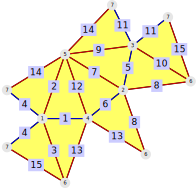

In Chapter 19 the concept of edge colourings was introduced in general. This chapter is concerned with a specific type of edge colourings, namely isosceles colourings. For an isosceles colouring we colour the edges of a surface with two colours, one which we call the leg colour and one we call the base colour. The edges of every face are coloured such that two edges are coloured in the leg colour and one in the base colour.
In Section 21.1, the concept of an edge two-colouring is defined. In addition, functions to give access to information on the colours of edges are described.
After these general properties, Section 21.2 deals with a special subclass of a two-colouring for simplicial surfaces: edge isosceles-colourings. An edge isosceles coloured simplicial surface is a two-coloured simplicial surface such that one of these two colours is the colour of two edges of each face. It describes a method to uniquely reconstruct an exact-coloured surface from its permutation (by introducing the local symmetries (21.4-3)).
Section 21.4 represents the edge isosceles-colouring of simplicial surfaces as permutations, the ColourInvolutions (21.4-2) of the wild coloured surface obtained by subdividing each face into two such that the two leg coloured edges lie in different faces.
Section 21.2 also describes some methods to construct isosceles-coloured simplicial surfaces.
This section defines the concept of edge two-colourings (21.1-1) and introduces the coloured version of this method:
We will illustrate all of these on a cube.
gap> cube := Cube();; gap> colCube := EdgeColouredPolygonalComplex(cube, [1,2,2,2,1,1,1,1,2,1,2,2]);;
This can be drawn by DrawSurfaceToTikz (19.2-1).
gap> pr := rec( edgeDrawOrder := [5,6,7,2,9], > edgeColourClassColours := ["red", "blue"] );; gap> DrawSurfaceToTikz(colCube, "Cube_twocoloured", pr );;
‣ IsEdgeTwoColouring( colComplex ) | ( property ) |
Returns: true or false
The property IsEdgeTwoColouring applies to edge-coloured polygonal complexes. It checks if the edges of each face are two-coloured by the given edge colouring. This is the case if and only if there are two colours such that all edges of each face have one of these two colours and both colours occur among the edges of each face.
We illustrate this on the cube that was introduced at the start of Section 21.1.
The given edge colouring is a two-colouring.
gap> EdgesOfColours( colCube ); [ [ 1, 5, 6, 7, 8, 10 ], [ 2, 3, 4, 9, 11, 12 ] ] gap> IsEdgeTwoColouring( colCube ); true
‣ ColouredEdgesOfFaces( rbComp ) | ( attribute ) |
‣ ColouredEdgesOfFace( rbComp, face ) | ( operation ) |
‣ ColouredEdgesOfFaceNC( rbComp, face ) | ( operation ) |
Returns: a list of lists of positive integers
For an edge two-coloured polygonal complex the method ColouredEdgesOfFace(rbComp, face) returns a list L such that L[i] is a list of all incident edges of face with colour i. The NC-version does not check whether the given face is an actual face of the coloured complex.
The attribute ColouredEdgesOfFaces collects all of these lists in a list indexed by the face labels, i.e. ColouredEdgesOfFaces(rbComp)[face] = ColouredEdgesOfFace(rbComp, face). All other positions are unbound.
Consider the cube example from the start of Section 21.1.
gap> ColoursOfEdges(colCube); [ 1, 2, 2, 2, 1, 1, 1, 1, 2, 1, 2, 2 ] gap> ColouredEdgesOfFace(colCube, 1); [ [ 1 ], [ 2, 3, 4 ] ] gap> ColouredEdgesOfFace(colCube, 4); [ [ 7, 8 ], [ 4, 11 ] ] gap> ColouredEdgesOfFaces(colCube); [ [ [ 1 ], [ 2, 3, 4 ] ], [ [ 1, 5, 8 ], [ 12 ] ], [ [ 5, 6 ], [ 2, 9 ] ], [ [ 7, 8 ], [ 4, 11 ] ], [ [ 6, 7, 10 ], [ 3 ] ], [ [ 10 ], [ 9, 11, 12 ] ] ]
While the previous sections dealt with general edge two-colourings, this section focuses exclusively on edge two-coloured simplicial surfaces. Moreover, we require that the simplicial surfaces are isosceles-coloured. For an isosceles colouring we colour the edges of a surface in two colours, one which we call the leg colour and one we call the base colour. The edges of every face are coloured such that two edges are coloured in the leg colour and one in the base colour. Since these are quite important structures, we will denote them by isosceles-coloured surfaces (21.2-1).
In this situation there is an additional local symmetry structure on the edges. For every leg coloured edge (9.4-1) there are two possible colourings of the adjacent faces, which can be described by a symmetry with respect to the edge between them. The colours can either be mirrored or rotated into each other. For every base coloured edge, the local symmetry is mirrored.
The first type is called mirror and the second one rotation. Together with the boundary-type for the boundary edges (9.4-3) this defines the LocalSymmetryOfEdges (21.4-3).
‣ IsIsoscelesColouredSurface( colSurf ) | ( property ) |
Returns: true or false
Check if an edge-coloured polygonal complex is an isosceles-coloured surface, i.e.
It is a simplicial surface (2.3-5)
It has an edge-two colouring (21.1-1), i.e. the edges are coloured by two colours
if one face has two edges of a particular colour, then so do all faces
gap> oct := Octahedron();; gap> colOct := EdgeColouredPolygonalComplex( oct, [1,1,1,1,2,2,1,2,1,2,1,1]);; gap> IsIsoscelesColouredSurface(colOct); true
This can be drawn by DrawSurfaceToTikz (19.2-1).
gap> pr := rec( edgeColourClassColours := ["red", "blue"], > edgeColourClassLengths := [1.2,0.8] );; gap> DrawSurfaceToTikz(colOct, "Oct_isosccoloured", pr );;
This section describes some usful functions for isosceles coloured Simplicial surfaces
‣ ApexVertexOfFace( isosSurf, face ) | ( operation ) |
Returns: a positive integer
For an isosceles coloured surface (21.2-1) the method ApexVertexOfFace(isosSurf, face) returns the vertex at the apex of the face face. The apex vertex of a face is the vertex which is incident to two leg coloured edges of the face.
Consider the example of the isosceles coloured octahedron from the start of Section 21.3.
gap> oct := Octahedron();; gap> colOct := EdgeColouredPolygonalComplex( oct, [1,1,1,1,2,2,1,2,1,2,1,1]);; gap> ApexVertexOfFace( colOct, 4 ); 6
‣ BaseEdgeOfFace( isosSurf, face ) | ( operation ) |
Returns: a positive integer
For an isosceles coloured surface (21.2-1) the method BaseEdgeOfFace(isosSurf, face) returns the edge of the face which is coloured in the base colour. In particular the face face has one incident edge in the base colour and two in the leg colour.
Consider the example of the isosceles coloured octahedron from the start of Section 21.3.
gap> oct := Octahedron();; gap> colOct := EdgeColouredPolygonalComplex( oct, [1,1,1,1,2,2,1,2,1,2,1,1]);; gap> BaseEdgeOfFace( colOct, 4 ); 5
‣ ColouredUmbrellasOfVertices( isosSurf ) | ( attribute ) |
‣ ColouredUmbrellaOfVertex( isosSurf, vertex ) | ( operation ) |
‣ ColouredUmbrellaOfVertexNC( isosSurf, vertex ) | ( operation ) |
Returns: a list of coloured edge-face-paths
For an isosceles coloured surface (21.2-1) the method ColouredUmbrellaOfVertex(isosSurf, vertex) returns an edge-coloured edge-face path for the umbrella-path around vertex. All of these umbrella-paths are collected in the attribute ColouredUmbrellasOfVertices(isosSurf), i.e. ColouredUmbrellasOfVertices(isosSurf)[vertex] = ColouredUmbrellaOfVertex(isosSurf, vertex).
This method extends UmbrellaPathsOfVertices (3.4-1). The edge-coloured edge-face-paths behave exactly as regular edge-face-paths but are displayed differently.
The NC-version does not check whether the given vertex actually is a vertex of isosSurf.
Consider the example of the isosceles coloured octahedron from the start of section 21.3.
gap> oct := Octahedron();; gap> colOct := EdgeColouredPolygonalComplex( oct, [1,1,1,1,2,2,1,2,1,2,1,1]);; gap> ColouredUmbrellasOfVertices( colOct ); [ ( e1, F1, e2, F7, e3, F5, e4, F3, e1 ) , ( e1, F1, e5, F4, e7, F2, e6, F3, e1 ) , ( e2, F1, e5, F4, e9, F6, e8, F7, e2 ) , ( e3, F5, e10, F8, e11, F6, e8, F7, e3 ) , ( e4, F3, e6, F2, e12, F8, e10, F5, e4 ) , ( e7, F2, e12, F8, e11, F6, e9, F4, e7 ) ]
QUESTION: HOW DO W GET THE COLOURS DISPLAYED? (Need to ask Frank)
For an isosceles coloured simplicial surface, the edges of each face are coloured in one of two colours, the leg colour and the base colour, such that two edges are coloured in the leg colour and one in the base colour.
Therefore the base coloured edges can be interpreted as an involution on the set of faces, interchanging two faces incident to a given base coloured edge. We need to subdivide the faces in order to be able to interpret the leg coloured edges as involutions. This yields a wild coloured surface on twice the number of faces, see (20.3-1).
‣ WildColouredSurfaceOfIsoscelesColouredSurface( isosSurf ) | ( attribute ) |
Returns: a wild coloured simplicial surface on twice the number of faces
From an edge isosceles-coloured simplicial surface (21.2-1) one can obtain a wild coloured simplicial surface (20.3-1) on twice the number of faces by subdividing each triangle by an edge through the apex and the midpoint of the base. It is constructed as follows:
Let m denote the maximum value of a face-name in isosSurf. A new edge passes from the apex of a face F to the mid point of the base edge of F and thus each face F of isosSurf is subdivided into two faces, namely F and m + F. We use the convention that F is incident to the smaller vertex of the base edge and m+F is incident to the larger vertex of the base edge.
We consider again the isosceles coloured octahedron from the start of the section.
gap> oct := Octahedron();; gap> colOct := EdgeColouredPolygonalComplex( oct, [1,1,1,1,2,2,1,2,1,2,1,1]);; gap> wildOct := WildColouredSurfaceOfIsoscelesColouredSurface(colOct);;
This subdivided surface can be drawn with DrawSurfaceToTikz (19.2-1).
gap> pr := rec( edgeColourClassColours := ["red", "blue", "green"], > edgeColourClassLengths := [1.2,0.4,1.13137], > edgeLabelsActive := false );; gap> DrawSurfaceToTikz(wildOct, "Octahedron_WildIsosceles", pr );;
‣ ColourInvolutions( isosSurf ) | ( attribute ) |
Returns: a list of involutions
For an edge isosceles-coloured simplicial surface (21.2-1) return the colour involutions of the edge-wild-coloured surface obtained by subdividing each triangle by an edge through the apex and the midpoint of the base, constructed by WildColouredSurfaceOfIsoscelesColouredSurface (21.4-1).
The attribute ColourInvolutions(isosSurf) returns a list of three involutions. These involutions are the colour involutions of a wild-coloured simplicial surface obtained as follows: The three colours arise by colouring the subdivided base edges in the colour of the original base edges, the leg edges in the colour of the original leg edges and the new edges introduced by the subdivision in a third colour. The colour involutions of this latter wild coloured surface are the colour involutions associated to isosSurf. The involutions are arranged in such a way that the first two involutions correspond to the involutions of the subdivided base edges and leg edges, according to their positions in ColoursOfEdges and the last involution corresponds to the edges introduced by the subdivision. Thereby, the colour involutions encode the neighbouring relations of the faces of the subdivided wild coloured surface that is induced by the edges of the colour. A boundary edge induces a fixed point.
We consider again the isosceles coloured octahedron from the start of the section.
gap> ColourInvolutions( colOct ); [ (1,4)(2,3)(5,8)(6,7)(9,12)(10,11)(13,16)(14,15), (1,3)(2,4)(5,15)(6,12)(7,9)(8,14)(10,16)(11,13), (1,9)(2,10)(3,11)(4,12)(5,13)(6,14)(7,15)(8,16) ]
The involutions correspond to a wild coloured surface on twice as many faces. Note that the first involution encodes the base coloured edges of this wild coloured surface, the second involution encodes the leg coloured edges and the the third involution encodes the edges coloured in a third colour. These edges subdivide the original faces.
‣ LocalSymmetryOfEdges( colSurf ) | ( attribute ) |
‣ LocalSymmetryOfEdgesAsNumbers( colSurf ) | ( attribute ) |
Returns: a list of strings
Return the local symmetry of the edges in colSurf, i.e. whether the colours in the adjacent faces of a given inner edge are mirrored or rotated.
The edges of the isosceles coloured surface colSurf have a local symmetry. For every inner leg coloured edge (9.4-1) there are two possible colourings of the adjacent faces, which can be described by a symmetry with respect to the edge between them. The colours can either be mirrored or rotated into each other. For every inner base coloured edge, the local symmetry is mirrored.
The first type is called mirror and the second one rotation. Together with the boundary-type for the boundary edges (9.4-3) this defines the LocalSymmetryOfEdges.
This function returns a list whose ith entry is "mirror" if the ith edge of colSurf is a mirror edge, or "rotation" if the ith edge of colSurf is a rotation edge, or "boundary" if the ith edge of colSurf is a boundary edge.
gap> oct := Octahedron();; gap> oct := AllIsoscelesColouredSurfaces(oct);; gap> LocalSymmetryOfEdges(oct[2]); [ "rotation", "mirror", "rotation", "mirror", "mirror", "mirror", "rotation", "mirror", "mirror", "mirror", "rotation", "mirror" ]
Here is an example of a surface with boundary:
gap> fourGon := SimplicialSurfaceByDownwardIncidence( > [[1,2],[1,3],[1,4],[1,5],[2,3],[3,4],[4,5],[2,5]], > [[1,2,5],[2,3,6],[3,4,7],[1,4,8]] );; gap> fiw := AllIsoscelesColouredSurfaces(fourGon);; gap> LocalSymmetryOfEdges( fiw[1] ); [ "mirror", "mirror", "mirror", "mirror", "boundary", "boundary", "boundary", "boundary" ]
‣ AllIsoscelesColouredSurfaces( simpSurf[, noIsom] ) | ( operation ) |
Returns: a list of isosceles-coloured surfaces
This method computes all isosceles-coloured surfaces up to isomorphism based for a given simplicial surface (2.3-5). If the optional parameter noIsom is set to false, the method computes all isosceles-coloured surfaces. This means the returned list contains isomorphic edge-coloured surfaces. By default, noIsom is true.
We determine up to isomorphism all possible isosceles colourings of a surface with 10 faces.
gap> surf := SimplicialSurfaceByVerticesInFaces( [ [ 1, 4, 5 ], > [ 1, 4, 6 ], [ 1, 5, 7 ], [ 1, 6, 7 ], [ 2, 3, 5 ], [ 2, 3, 6 ], > [ 2, 4, 5 ], [ 2, 4, 6 ], [ 3, 5, 7 ], [ 3, 6, 7 ] ] );; gap> isosceles := AllIsoscelesColouredSurfaces(surf);; gap> Size(isosceles); 3 gap> isoscelesAll:=AllIsoscelesColouredSurfaces(surf, false);; gap> Size(isoscelesAll); 11 gap> Size(EdgeColouredPolygonalComplexIsomorphismRepresentatives(isoscelesAll)); 3
Given a wild coloured surface, one can find an isosceles coloured surface by identifying two of the three colours. However, not every isosceles coloured surface arises in this way from a wild coloured surface. For this we also determine the wild colourings and compare them.
gap> wilds := AllWildColouredSurfaces(surf);; gap> wilds := EdgeColouredPolygonalComplexIsomorphismRepresentatives(wilds);; gap> Size(wilds); 1 gap> wild := wilds[1]; wild coloured surface (7 vertices, 15 edges and 10 faces)
To see why there is only one wild colouring, but three isosceles colourings, we draw the surfaces:
gap> pr := rec( edgeColourClassColours := ["red", "blue"], > edgeColourClassLengths := [1.2,0.8] );; gap> pr := DrawSurfaceToTikz( isosceles[1], "Surf10_Isosc1", pr );; gap> pr := rec( edgeColourClassColours := ["red", "blue"], > edgeColourClassLengths := [1.2,0.8] );; gap> pr := DrawSurfaceToTikz( isosceles[2], "Surf10_Isosc2", pr );; gap> pr := rec( edgeColourClassColours := ["red", "blue"], > edgeColourClassLengths := [1.2,0.8] );; gap> pr := DrawSurfaceToTikz( isosceles[3], "Surf10_Isosc3", pr );; gap> pr := rec( edgeColourClassColours := ["red", "blue", "green"]); gap> pr := DrawSurfaceToTikz( wild, "Surf10_Wild", pr );;

It can easily be seen that the first and third isosceles coloured surface cannot arise from identifying two colours of a wild coloured surface: Note that each has a vertex of degree 5 and all edges of this vertex are coloured red. If this isosceles colouring had arisen from a wild colouring, then two of the wild colours would have had to be identified to become the red colour. However, there is no assignment of two colours to a vertex of degree 5 that arises from a wild colouring, as in a wild colouring the two colours have to alternate.
‣ CounterOfVerticesByAngle( surf ) | ( operation ) |
Returns: A Counter-GAP-object
‣ IsCounterOfVerticesByAngle( object ) | ( property ) |
Returns: true or false
The function VertexCounterByAngle is a refinement of the function VertexCounter: For an edge coloured simplicial surface which is either edge vari-coloured or isosceles coloured it determines for every vertex how many faces are incident to that vertex at a given angle. In both cases, the angle of a face at a particular vertex is determined by the colour of the opposite edge. The function VertexCounterByAngle returns a list. The entries of this lists are lists of the form [s,i], where i is a number counting how often the vertex angle described by the list s is encountered. The entry s is itself a list which describes the angles around a vertex by recording pairs [a,j], where a is the colour of an edge opposite the vertex and j counts how many times this angle was counted.
gap> ico := Icosahedron();; gap> colIco := AllIsoscelesColouredSurfaces(ico)[1];; gap> counter := CounterOfVerticesByAngle( colIco ); counter of vertices by angle ([ [ [ 1, 4 ], [ 2, 1 ] ], [ [ 2, 5 ] ] ] degrees, and [ 10, 2 ] multiplicities) gap> ListCounter(counter); [ [ [ [ 1, 4 ], [ 2, 1 ] ], 10 ], [ [ [ 2, 5 ] ], 2 ] ]
This can be drawn by DrawSurfaceToTikz (19.2-1).
gap> pr := rec( edgeColourClassColours := ["red", "blue"], > edgeColourClassLengths := [1.2,0.8] );; gap> DrawSurfaceToTikz(colIco, "Ico_isosccoloured", pr );;
The example shows that there are two types of vertices in the given colouring of the icosahedron. Vertices of the first type contain 4 angles between edges whose opposite edge has colour "1" (red) and one angle whose opposite edge has colour "2" (blue). Vertex 2 is an example of such a vertex. The vertices of the second type contain five equal angles and the opposite edges have colour "2" (blue). Vertex 1 is an example of such a vertex.
generated by GAPDoc2HTML